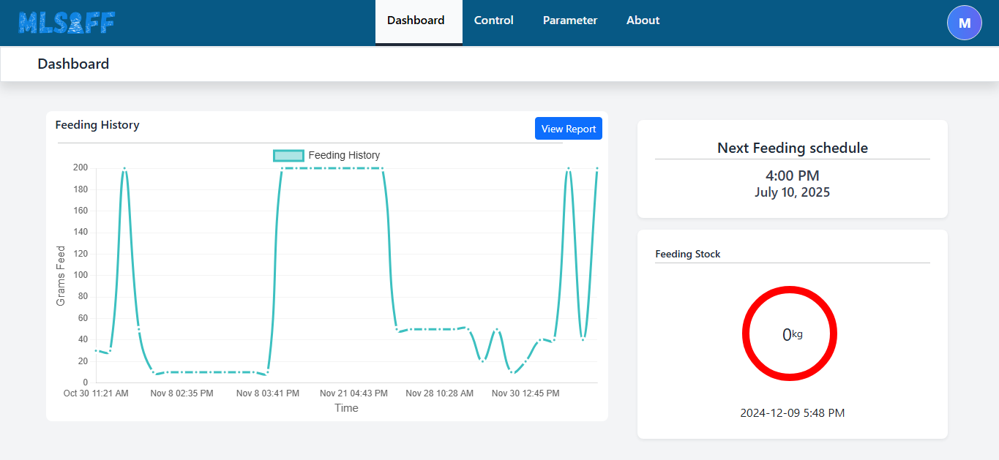
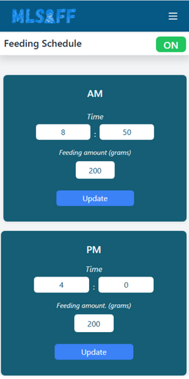

Background
Bachelor of Science in
Information Technology
Specialization Track in Network
and Security - Isabela State
University Main Campus
Echague, Isabela (2021-2025)
IT Technical Support Intern - Universal
Leaf Philippines Inc. (Internship),
Nappucu Pequeño, Reina
Mercedes, Isabela March 2025 -
June 2025. Certificate
Expertise
- Ability to perform effectively under pressure.
- Excellent organizational skills with a proactive problem-solving mindset.
- Quick adaptability to new environments and collaborative team player
Certification Passed
- Network Security – Certiport, Pearson VUE, December 6, 2024, Certificate
TRAINING AND SEMINARS
- Network Security – CISCO, Coursera, December 7, 2024, Certificate
- Data Security – CISCO, Coursera, December 7, 2024, Certificate
- Programming for Everybody (Getting Started with Python) – University of Michigan,
Coursera, October 17, 2024, Certificate
- Python Data Structure – University of Michigan, Coursera, October 21, 2024, Certificate
- Using Python to Access Web Data – University of Michigan, Coursera, October 25,
2024, Certificate
PROJECT

MLSAFF: Implementation of Multi-Layered Security Controlled Measures in Automated Fish Feeder – A
study
focus on integration of network and physical security to automate a fish feeder specially developed for
tilapia to dispense feed pellets.

ABOUT ME
I am Meljay future Network Engineer.
Fresh graduate with experience as an IT Support Intern, providing 486 hours of technical support on
troubleshooting hardware/software and delivering excellent customer service to coworkers.
ADDRESS
Purok 7, Sta. Isabel Sur, Ilagan City,
Isabela, 3300, Philippines
Phone
(+63) 916-845-1389
Email